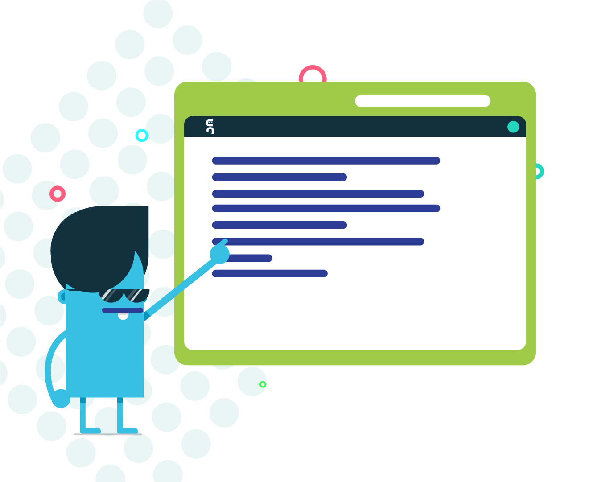
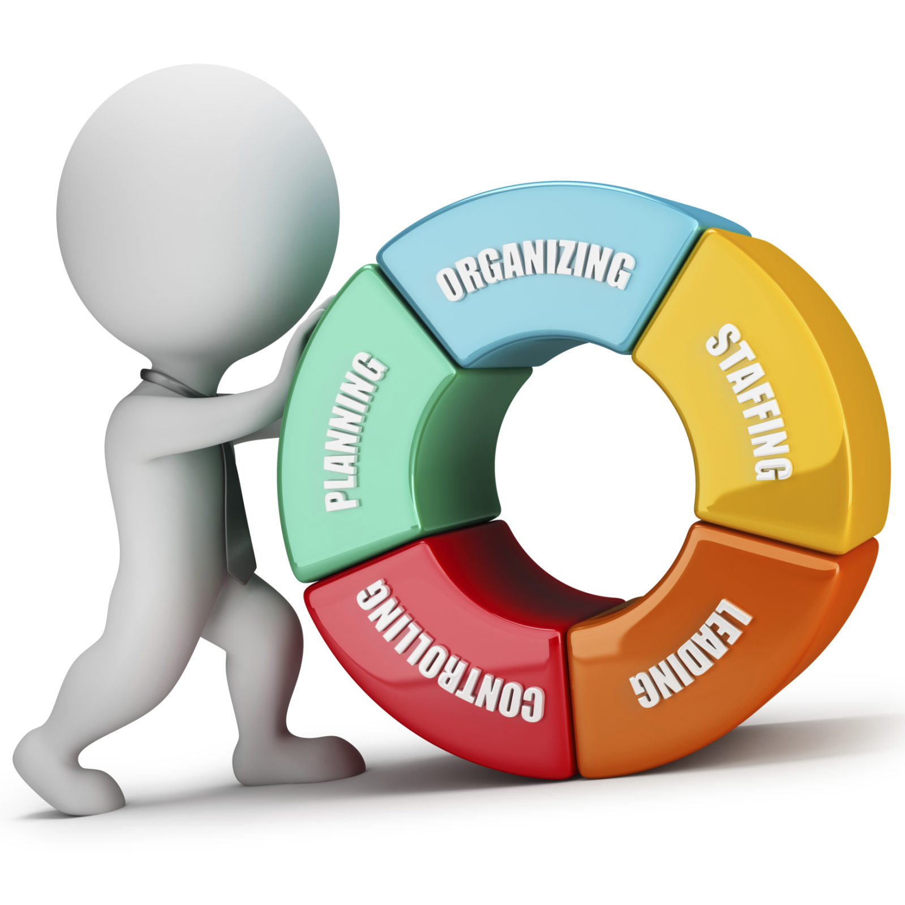
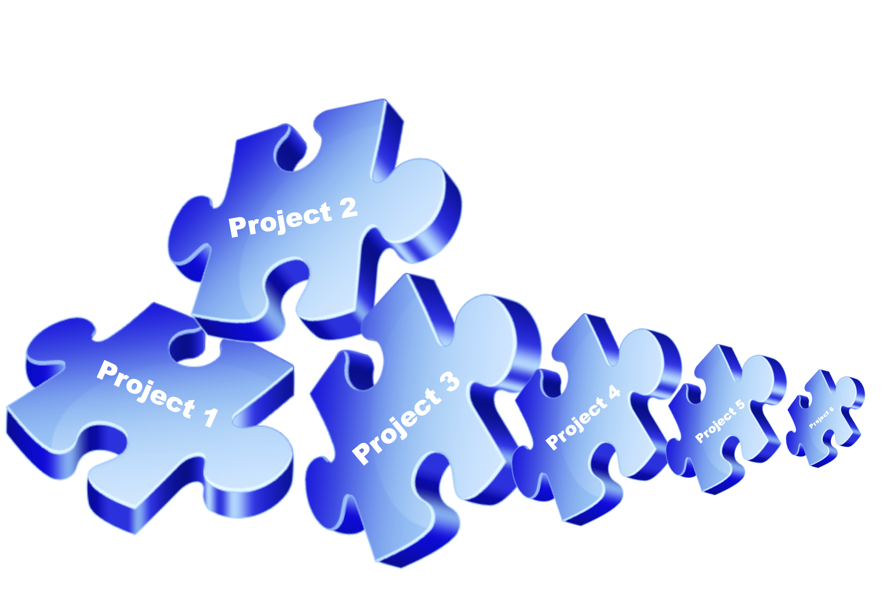
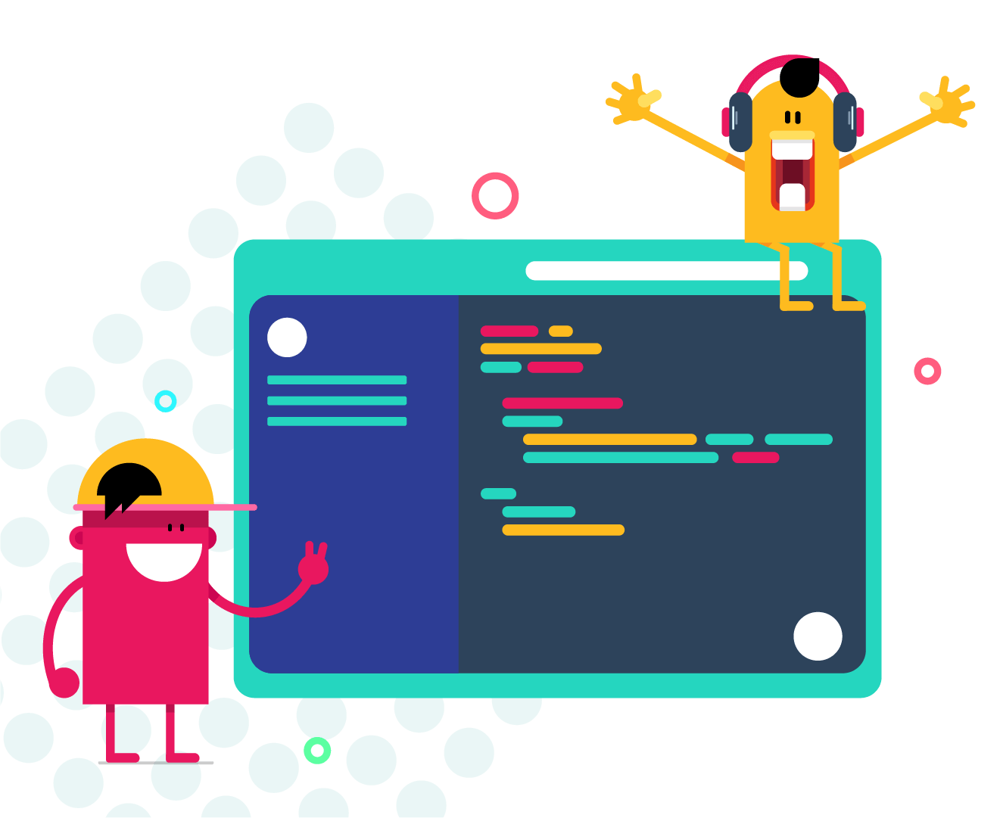

ABOUT ME
I am Koribilli Balaram Murthy, a passionate and dedicated Full Stack MERN Developer a Bachelor's degree in Computer Applications (BCA) from Aditya Degree College, completed in 2024. I have a strong foundation in modern web development and hands-on experience in building full-stack applications using the MERN Stack (MongoDB, Express.js, React.js, and Node.js). I am skilled in developing responsive and interactive user interfaces using HTML5, CSS3, JavaScript, React.js, Bootstrap, and Tailwind CSS. I have knowledge of backend development using Node.js and Express.js, along with creating and integrating RESTful APIs. I am familiar with database management using MongoDB implementing secure authentication using JWT. I have experience working with tools like Git, GitHub, VS Code, Postman, and npm for efficient development workflows. I have developed projects such as E-Commerce Applications, Task Management Systems, Expense Tracker Applications, and Blog Management Systems using MERN technologies. Through these projects, I gained practical knowledge of CRUD operations, API integration, database handling, and responsive web design. I am passionate about solving real-world problems through technology and creating efficient digital solutions. I am a quick learner who continuously explores new technologies and improves my development skills. My strengths include problem-solving, adaptability, teamwork, communication skills, attention to detail, and time management. I enjoy collaborating with teams and contributing creative ideas to achieve project goals. As a fresher, I am looking for an opportunity to apply my technical knowledge, gain professional experience, and grow as a Full Stack MERN Developer. I am committed to delivering high-quality solutions while continuously learning and adapting to industry trends.
SKILLS
EDUCATION
SCHOOL: I completed my Secondary School Certificate (SSC) from Dr. Himasekhar High School in 2019. During my schooling, I built a strong academic foundation and consistently performed well in my studies. I achieved an impressive CGPA of 9.8, reflecting my dedication and commitment to learning. My school years helped me develop discipline, problem-solving skills, and a positive attitude toward education. This achievement has motivated me to continue striving for excellence in my academic and professional journey.
Intermediate: I completed my Intermediate education at Sri Chaitanya Junior College in 2021. Throughout my course, I focused on strengthening my academic knowledge and analytical skills. I secured 877 marks, demonstrating my dedication and consistent effort in academics. My time at Sri Chaitanya helped me improve my problem-solving abilities, time management, and learning skills. This educational experience prepared me for higher studies and future career opportunities.
DEGREE COLLEGE: I completed my Bachelor's degree at Aditya Degree College in 2024. During my graduation, I gained a strong foundation in my chosen field while enhancing my technical and analytical skills. I graduated with 85%, reflecting my dedication, hard work, and consistent academic performance. My college experience also helped me develop teamwork, communication, and problem-solving abilities. This achievement has prepared me well for professional opportunities and continuous learning.
PORTFOLIO




CONTACT
GET IN TOUCH
I am Balaram, a MERN Stack Developer.
MY ADDRESS
Anakapalli, India
9963097916
koribillibalaram25@gmail.com
BALARAM KORIBILLI